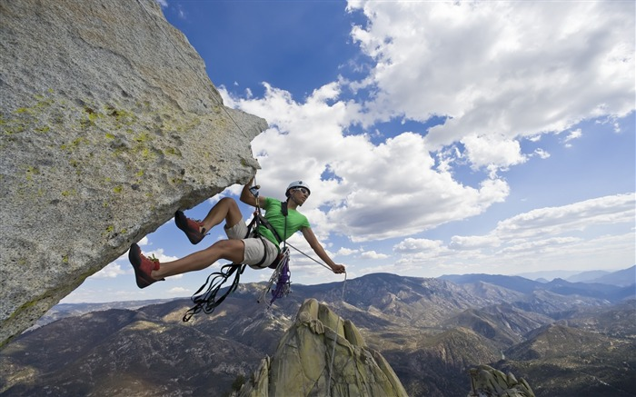
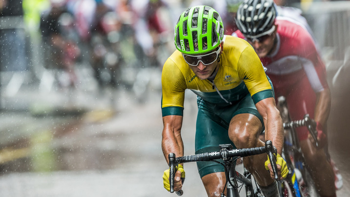
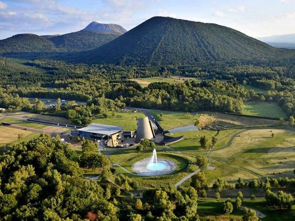

Франция невероятно популярна среди туристов не только благодаря своей богатой культурной истории. Живописные пейзажи, возможность свободного передвижения, французские Альпы и многочисленные пляжные курорты манят путешественников не меньше. По территории страны проложено огромное количество маршрутов для трекинга и велосипедных трасс. Велотуры невероятно востребованы, недаром во Франции проходит самая известная велогонка в мире – Тур-де-Франс. У берегов Средиземного моря и Атлантического океана можно заняться дайвингом, серфингом, кайтингом и другими водными развлечениями. Горные альпийские вершины являются центрами для занятий альпинизмом и горнолыжным спортом.
Велоспорт и трекинг являются очень популярными направлениями для отдыха во Франции. По стране проложено огромное количество трасс, большинство из них проходит по историческим и винодельческим регионам. Увлекательной станет экскурсия на велосипеде или пеший тур по винным погребам Бордо. Поездка будет сопровождаться посещением местных винодельческих шато и великолепными видами. В долине реки Луары находится более 70 замков, прогулка по этому региону подарит незабываемые впечатления и массу эмоций. Еще одно популярное направление – пляжи Атлантики и знакомство с Корсикой. Отправиться в велопутешествие можно также по Лангедоку, к побережью Средиземного моря. Тур составить можно самостоятельно или воспользоваться услугами туроператоров.
Увлекательной будет прогулка по региональному парку вулканов Оверни. Такое путешествие подойдет любителям восхождений и трасс с препятствиями. Кроме уникальной природы, для путешественников предусмотрены экскурсии и посещение местных достопримечательностей. Во Французских Пиренеях над пропастью затерялся Испанский арочный мост, место также является невероятно популярным для любителей трекинга. С моста открывается завораживающий вид на водопады, к которым также можно совершить восхождение. Местность оборудована подъемником для удобства путешественников. Недалеко от города Кальви на вершине находится часовня Нотр-дам де ля Серра, считается, что если подняться к ней вместе с любимым человеком, восхождение принесет счастье на всю жизнь.
Идеальным местом для занятий дайвингом является Корсика, именно на этом острове расположен крупнейший дайвинг-центр страны. Опытные дайверы могут погрузиться у берегов Сангинера на глубину более 30 метров, для тех, кто только начинает, предлагаются менее сложные погружения. Также заняться дайвингом можно на всем Лазурном побережье. А вот заниматься серфингом лучше на берегу Атлантического океана. Одним из самых популярных мест для серферов являются пляжи Биарриц в Северной Стране Басков, место лучше всего подходит для новичков. А профессионалам будут интересны споты в Ландах и Жиронде.
Наверх